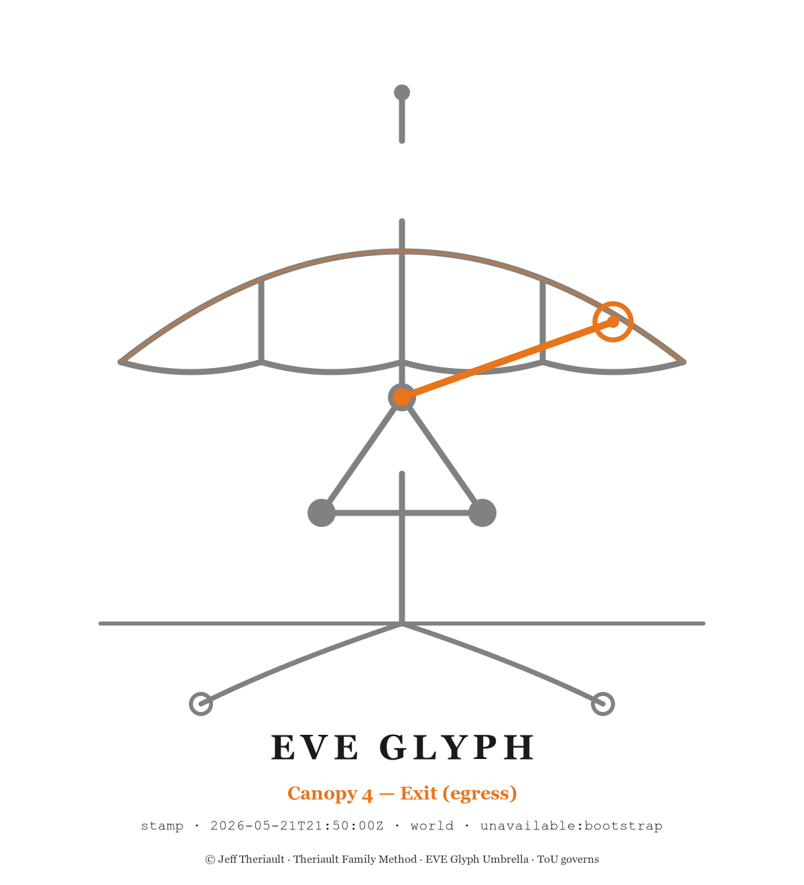

Public Gateway · v1
Surface first.
Watermark always.
The umbrella holds.
dmzopen.ai is the public-facing intake gateway for the three-way HCP solution consolidation bench test. Three independent stacks build against the same collector specification. All three submit through this surface. Apex certifies.

§ 1
The three-way bench test
Three independent stacks. One specification. One surface. The cards below are live channels — each routes to its submission folder on the public repository.
Claude Enterprise
Enterprise-grade Claude stack. Build against the same HCP collector spec; submit source, evidence, watermarked artifacts, and a clean revert procedure.
Awaiting submission
Sovereign Enterprise
Sovereign-first enterprise stack. Build against the HCP collector spec under data-residency and umbrella constraints. Submit per protocol.
Awaiting submission
Perplexity
Perplexity stack. Authored through this gateway. Subject to the same rubric, the same watermark, the same chain of custody as every other stack.
§ 2
How to submit
For each submission, drop the following into your folder. Incomplete submissions are rejected back to author — never partial-accepted.
-
01
manifest.jsonCopy from
manifests/_template.json. Fill every field. -
02
README.mdOne-page narrative: what you built, the stack used, the surfaces hit, the locks honored.
-
03
/src/Source materials — code, prompts, chains, configs.
-
04
/evidence/Screenshots, transcripts, dispatch logs, watermarked artifacts.
-
05
/revert.mdExact procedure to undo your build.
REVERSIBILITY-00applies. -
06
/sha256.txtSHA-256 of every file you submitted, sorted. The manifest must match.
§ 3
Binding canon
Submitting against this gateway acknowledges the following locks. Removal or alteration
of watermarks is treated as a copyright-violation event under ONE-UMBRELLA-00
(pending counsel).
NO-PSYCH-00
No operator psychology or physical-state material is collected, accepted, or routed through this surface.
REVERSIBILITY-00
Every change must be revertable. A submission without a clean revert procedure is incomplete.
COPYRIGHT-00
Submissions enter the umbrella per ONE-UMBRELLA-00 (pending counsel).
HUMAN-FAVOR-00
Operator authority is unimpaired. The human is the constraint. Buttons present before the loop closes.
PROPOSE-ONLY
Submitting ≠ accepted. Apex review gates merge. Until certified, status is submitted-pending-apex.
APEX-CERT-00
Operator certifies. No autonomous merge to the umbrella record.
CHANNEL-LOCK
OneDrive is forbidden. Local-first to Downloads; watermarked-image-via-WhatsApp confirms physical storage.
PATENT-GRACE
Patent grace clock 2027-05-17 · US §102(b)(1)(A). Treat all submitted material as patent-grace-clock IP.
§ 4
After submission
Every action against this channel is logged, append-only, to the chain-of-custody ledger. Below is the path from receipt to counsel handoff.
-
1
Intake check
Manifest schema validation, watermark presence per artifact type, SHA-256 verification. Logged to
chain-of-custody/<stack>-<utc>.md. -
2
Conformance scoring
Submission graded against the canon rubric in
eve-glyph-archive/canon/_pending-counsel/HCP-CONSOLIDATION-MATRIX.pdf. -
3
Apex review
Operator certifies per
APEX-CERT-00. Until certified, status issubmitted-pending-apex. -
4
Counsel routing
Full bench result PDF goes to copyright counsel via
_pending-counsel/staging.
| Stack | Status | Last event |
|---|---|---|
| Claude Enterprise · Chris | Awaiting submission | Channel opened 2026-05-18 |
| Sovereign Enterprise · Lukas | Awaiting submission | Channel opened 2026-05-18 |
| Perplexity | Channel opened 2026-05-18 |
§ 5
Watermark protocol
WATERMARK-00 (pending). Required for every submitted artifact. Watermarks
are evidentiary, not cryptographic.
Artist=EVEglyphDesign · EXIF Copyright=© Dany Theriault / EVEglyphDesignAuthor=EVEglyphDesign, Producer=dmzopen.ai-intake-v1# EVEGlyph — submitted via dmzopen.ai — © EVEglyphDesign header on every file.eveglyph sidecar with mark, submission_id, SHA-256§ 6 · Canonical record
EVE Glyph response-stamp
This site was published from the same surface that authored the gateway scaffold. The
stamp below is the canonical record of that publication per
CANON-RESPONSE-STAMP-GLYPH §1.
Surface first. Watermark always. Apex certifies. The umbrella holds.